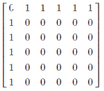
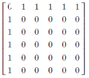

Assignment
Q1
The coefficient of xn in which of the following expressions gives the number of ways in which n marbles be selected from a large supply of blue, red and yellow marbles if the selection must include an even number of blue marbles ?
Answer
c
Q2
Closed form for the sequence 1, 5, 52, 53, ... is:
Answer
d
Q3
To obtain the following matrix A, the network command is:


Answer
a
Q4
What would the output be with the following input?
import networkx as nx
G = nx.complete_graph( 4 )
list ( nx.eulerian_circuit ( G ))
import networkx as nx
G = nx.complete_graph( 4 )
list ( nx.eulerian_circuit ( G ))
Answer
d
Q5
What is the closed form for the sequence 1, 2, 2, 3, 4, 4, 5, 6, 6, 7, 8, 8, 9, 10, 10, ... ?
Answer
c
Q6
What would the output be when the input is the following:
import networkx as nx
H = nx.star_graph( 6 )
nx.coloring.greedy_color( H )
import networkx as nx
H = nx.star_graph( 6 )
nx.coloring.greedy_color( H )
Answer
b
Q7
Which of the following represents the number of ways of distributing 25 identical pennies among 4 children?
Answer
d
Q8
In how many ways can 500 identical envelopes be divided in packages of 5 among 4 student groups so that each group gets atleast 5 and not more than 20?
Answer
b